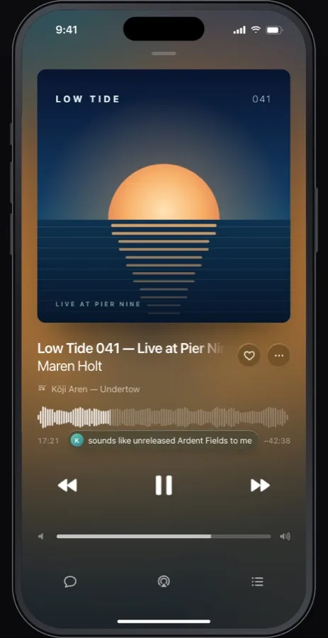
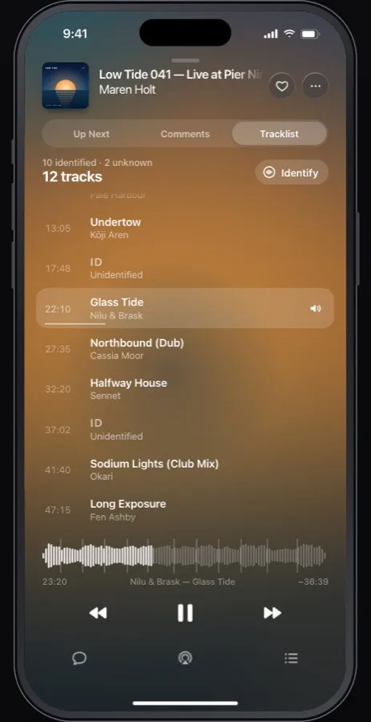
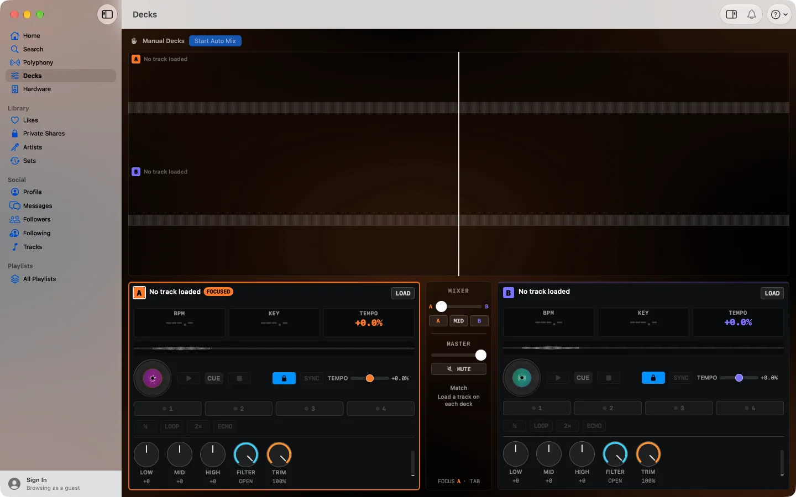
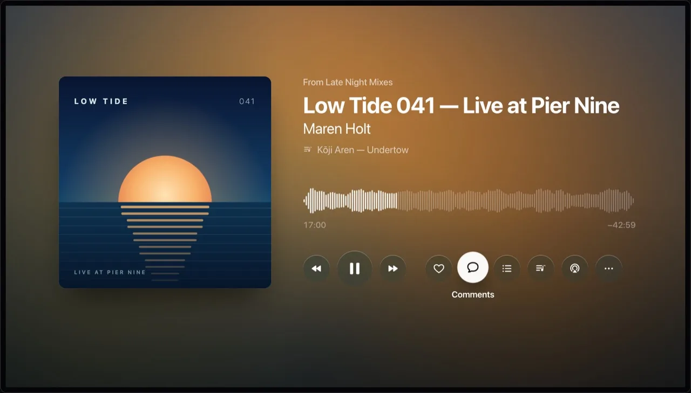

04 / Without a signal
Go offline.
Keep listening.
Download a track, a playlist or all your likes. Playlists stay in sync as they change. Optimise Storage makes room when you need it.
Downloads stay encrypted on your device.

An independent app. Made for listening.
Your SoundCloud, at home
on all your Apple devices.
The whole waveform. The next track in the mix.
A pair of decks when the mood takes you.
Coming to the App Store. Free, with no in-app purchases.
01 / Get into it
Sign in with your SoundCloud account. Your likes, playlists and the people you follow are already there. Nothing to import.
Now Playing
Big artwork. A full waveform. Comments pinned to the second they were left. A calm screen that gives the music room.
See the current track as a DJ set plays. Identify the ones you don’t know, and keep saved tracklists in Library.
Up Next, Comments and Tracklist are a swipe away.


02 / Find your next transition
Two decks, a crossfader, three-band EQ, filters, hot cues, loops and jog wheels. Get your hands on the mix.
Sounding for Mac / Decks
A ↔ B
On-device tempo, key and genre help you find what fits. Analysis follows you through your own iCloud.
It beat-matches the next track in your queue and brings it in on time. On Mac, you can plug in a MIDI controller, too.
03 / Take it along
Start on the TV. Pick up your iPhone on the way out. Carry on in your headphones from the same second.

Let the TV do the talking.
Browse, queue and control your Apple TV from iPhone or Mac. Run the decks from your phone, right from the sofa.
Several devices can link to one Apple TV. Polyphony plays in time across nearby devices.
Your library, decks and downloads. iPhone also links your other devices.
Play, pause, skip. Scrub with the Digital Crown. Start music on your iPhone.
A waveform you can read from the sofa. Mix, listen and fill the room.
A menu bar player, MIDI support and a remote for your Apple TV.
04 / Without a signal
Download a track, a playlist or all your likes. Playlists stay in sync as they change. Optimise Storage makes room when you need it.
Downloads stay encrypted on your device.
05 / Just between your devices
No servers. No accounts of our own. No analytics or advertising. Your sign-in stays on your devices. What syncs goes through your own iCloud.
Nothing of yours passes through a server of ours.
There isn’t one.
Yes. Sign in with your SoundCloud account on iPhone and your likes, playlists and followed artists are there. Your iPhone links your Apple TV and Mac over your local network.
Yes. Sounding is free, with no in-app purchases, subscriptions or advertising. A SoundCloud account is required.
Sounding is coming to the App Store for iPhone, iPad, Apple Watch, Apple TV and Mac. TestFlight is the first step. Email to ask about testing.
No. Sounding has no servers. It talks directly to SoundCloud to fetch your library and play your music. Your sign-in stays on your devices. Sync uses your private iCloud, which the developer cannot read.
Open TestFlight, choose Sounding and tap Send Beta Feedback. Include what you were doing, your device and what happened. You can also email sounding@alex.forbes.red.
No. Sounding is an independent app made by Alexander Forbes-Reed. It is not affiliated with, endorsed by or sponsored by SoundCloud.
Listen, mix, take it along.
iPhone, iPad, Apple Watch, Apple TV and Mac.
TestFlight first. Your feedback is welcome.